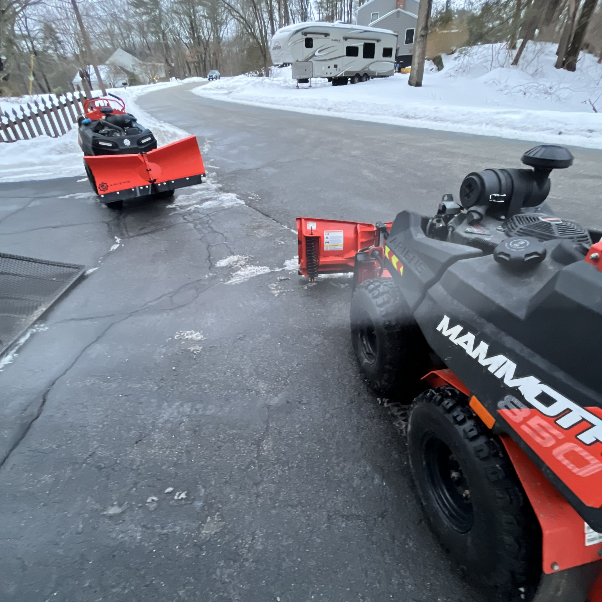
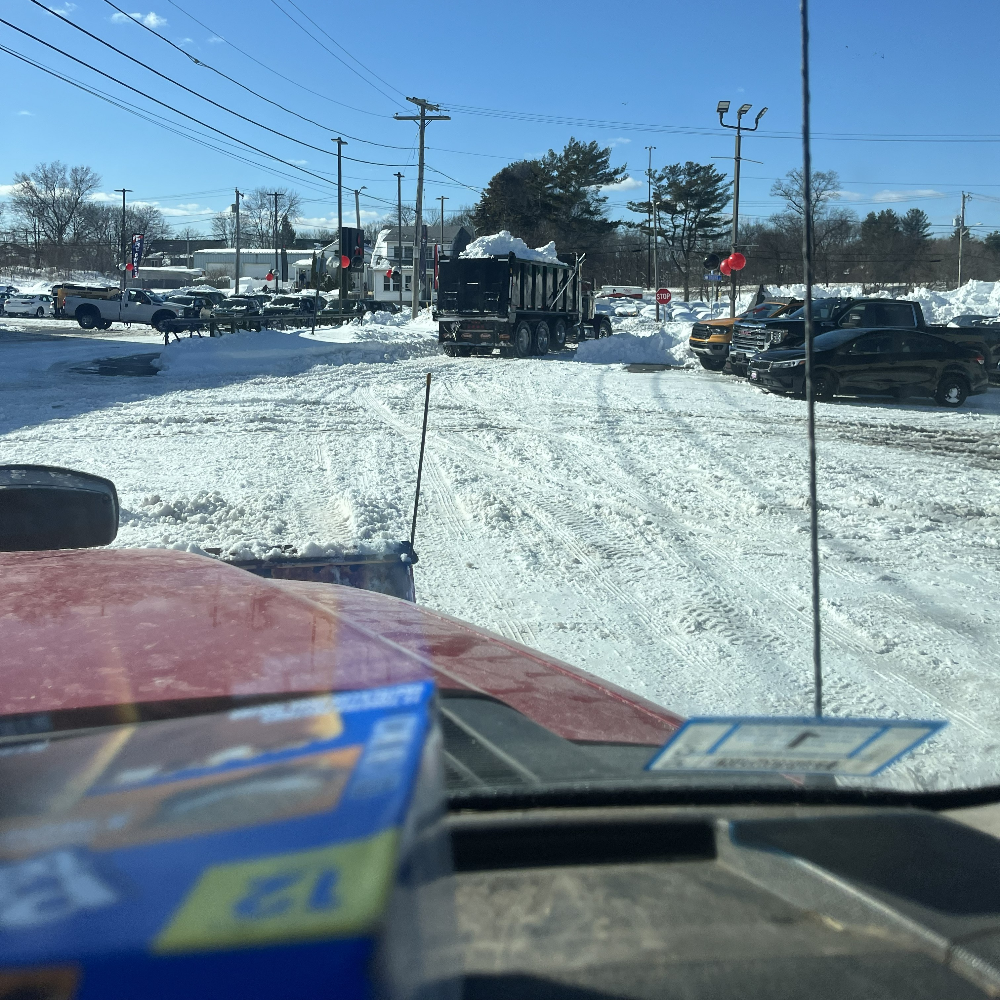

Snow Removal
Keeping Your Property Clear All Winter
When the snow hits, we've got you covered. We offer reliable residential and commercial snow removal throughout Cumberland, RI and surrounding areas — so your driveway, walkways, and property are safe and accessible after every storm.
Driveway Plowing
Fast, thorough plowing of residential and commercial driveways after every snowfall, so you can get in and out without delay.
Walkway & Step Clearing
We shovel and clear all walkways, steps, and entry points to keep your property safe and accessible.
Salting & De-Icing
Salt and de-icing treatment applied to driveways and walkways to prevent ice buildup and reduce slip hazards.
Lot Clearing
Full-lot snow clearing for commercial properties and parking areas, keeping your business accessible through every storm.


Ready to get on the plow list this winter?
Get a Free Estimate